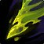

小怪 · 开场和尾王前
看到鲜血献祭挂上身
→ 圣盾术 →
圣盾术 →  保护祝福 → 队友 清除
保护祝福 → 队友 清除
仪式首领读 3 秒，祭坛之灵剖开全队，一下物理伤害，再吸收你接下来的一大口治疗。圣盾开出来，自己身上的就没了；一两秒后把保护祝福给一名输出，他身上的也当场消失。
毒牙祭坛的伤害大多挂在身上慢慢跳，惩戒在这里的活是清。仪式首领的鲜血献祭吸收治疗，圣盾或保护祝福一开就没了，保护还能给队友清。拉维的毒球砸到你，圣佑没好就开圣盾，接着把牺牲祝福交给另一个吃球的人。双牙的麻痹射击用自由祝福解。尾王祖尔加读切骨者时，看飞斧点了谁，牺牲就给谁。责难专断四种读条：刺耳嘶鸣、毒伤、剧毒萎缩、群体毒伤。
一整场 +23 里，祝福、圣盾、圣佑和责难分别交给了哪个机制。
每把都要做到的四个处理。
仪式首领读 3 秒，祭坛之灵剖开全队，一下物理伤害，再吸收你接下来的一大口治疗。圣盾开出来，自己身上的就没了；一两秒后把保护祝福给一名输出，他身上的也当场消失。
拉维朝三个人各吐一颗毒球，砸中一大下，之后 10 秒每秒一跳，站得近的人一起吃。圣佑好了就交圣佑；没好就开圣盾，身上的毒球当场清掉。
麻痹射击 14 秒每秒一跳自然伤害，每跳再减 10% 移动速度，叠到最后人几乎走不动。自由祝福给被打的队友，点了无拘自由你自己也得一份，两个人身上的麻痹射击一起解掉。
切骨者读 5 秒，朝一名玩家掷飞斧，路径上的人都挨一下物理伤害，再流血 7 秒，无视护甲。读条到一半就给牺牲，首击和整段流血都分走 30%。飞斧点的是你，就交圣佑。
仪式首领在开场三波和尾王前那一波都有。它读 3 秒鲜血献祭，读完全队每人挨一下物理伤害，身上挂上一个吸收治疗的减益，治疗得先把这层吸收刷穿才能回血。连着几轮下来，治疗光刷吸收就跟不上。
读条时交圣佑术，先把这一下压低。读完开圣盾术，圣盾免疫有害效果，身上的鲜血献祭当场消失；点了圣光决断，每清一个减益还回 10% 血。圣盾之后一两秒把保护祝福给一名输出，他身上的鲜血献祭同样当场清掉。
圣盾在冷却时，保护祝福给自己也能清。圣疗术是另一个办法，治疗量远大于这层吸收，一下就冲掉。开场三波仪式首领多，圣盾、保护、圣疗轮着交，尾王前那一波把圣盾和保护都留着。
三重喷吐是拉维这场的主要伤害：一次三颗毒球，砸中先吃一大下，之后 10 秒每秒一跳，5 码内的人一起吃。每一轮被砸到都要有东西顶。
圣佑好了就交圣佑术，复仇之盾先吃掉砸中那一下，后面每跳再减三成。圣佑在冷却的那一轮开圣盾术，毒球直接从身上清掉，10 秒持续伤害一跳都不吃。
圣盾开着时，牺牲祝福给另一个吃到毒球的队友。牺牲把他受到的 30% 转到你身上，被圣盾全部吃掉：他少掉三成，你一点不掉。没开圣盾时，牺牲也是在毒球砸中后交给吃球的人。
祖尔加每轮先读毒牙仪式，有人进光束拦，拦的人挂上 50 秒的仪式毒液。接着连读两次切骨者，每次 5 秒，飞斧朝一名玩家掷出，路径上的人都挨一下物理伤害，再流血 7 秒，无视护甲。祖尔加的物理技能会让人大出血，大出血会移除仪式毒液，所以拦过光束的人要主动进飞斧路径。
读条期间就能看到飞斧点了谁。牺牲祝福在读条中段给被点的人，首击到流血结束都在牺牲里。点了正义牺牲，牺牲 60 秒一次，祖尔加差不多一分钟一组飞斧，每组都能给一次。
飞斧点的是你，或者你挂着仪式毒液要进路径，读条时交圣佑术，流血每跳从三十万压到二十万以下。
每一行：看到什么 → 按什么 → 为什么。

金框是这个副本的核心技能。
+23 高手同款惩戒天赋，英雄天赋烈日先驱。复制字符串，在游戏天赋界面点「导入」。
CYEAAAAAAAAAAAAAAAAAAAAAAAAAAAwoZZbmZWGzYGAAAAAAzUmlZYmx2Y2GmZbGjxYYGLsBgZZ2mZmtGAAAYBwAgxMbAzYmZDYmZYMjBD